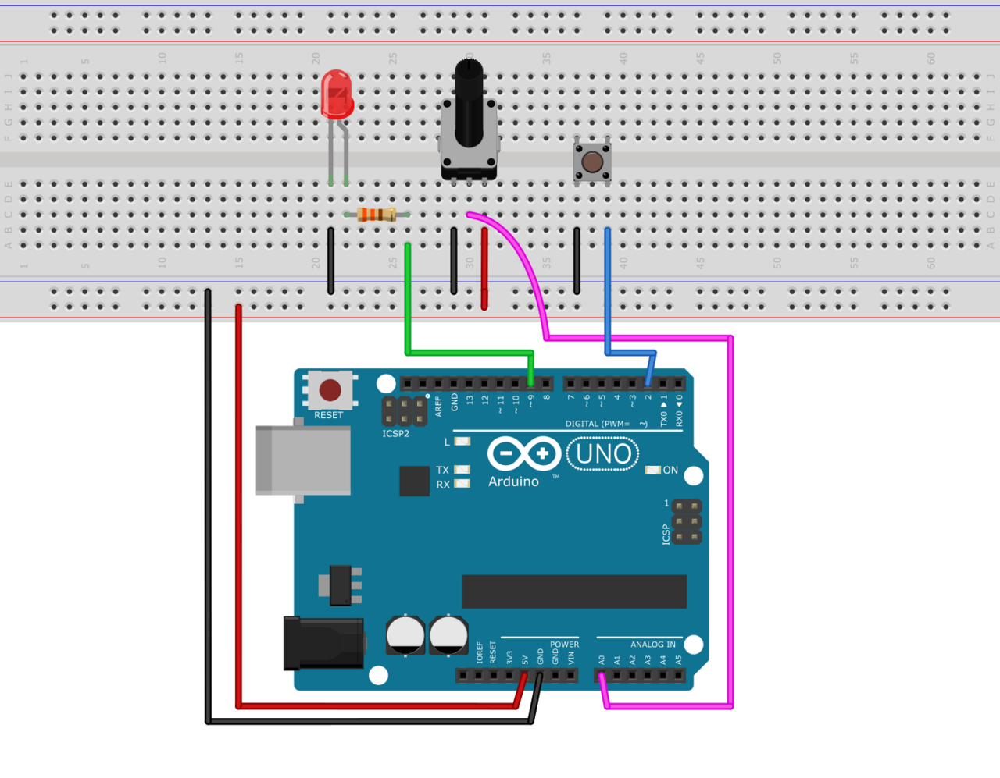

Working with Time
In interactive systems, timing plays a crucial role in controlling the flow of events. Whether you are counting time, triggering events, or generating periodic signals, Plaquette provides powerful tools to manage time effectively. In this section, we will explore timing functions and units, such as seconds(), Chronometer, Alarm, Metronome, and Ramp.
Timing is the backbone of interactive systems. By understanding and leveraging Plaquette’s timing tools, you can create precise, dynamic, creative projects that respond in real-time to various inputs and conditions.
Note
To follow along with the examples, set up a simple circuit:
A potentiometer connected to
A0to control proprties dynamically.A button connected to pin
2with an internal pull-up resistor to trigger actions.An LED connected to pin
9(PWM capable) through a 330 \(\Omega\) resistor.
It is strongly advised to use the Serial Plotter to visualize the signals.
Warning
The value returned by timing units and functions are approximations. They are good enough for most creative applications. They should, however, not be used as a substitute for a real-time clock in applications requiring high precision, especially over long periods of time. For example, on an Arduino Uno, a drift may be experienced of up to 10 seconds per hour, or 5 minutes per day.
Measuring Absolute Time with seconds()
The most fundamental timing functionality in Plaquette is the seconds() function. As its name suggests, it simply returns the elapsed time in seconds since the program started running. This is very useful for measuring durations or triggering time-based events.
Example: Turn LED off after 3 seconds, then on again after 10 seconds.
#include <Plaquette.h>
DigitalOut led(LED_BUILTIN);
void begin() {
led.on();
}
void step() {
if (seconds() >= 3) { // After 3 seconds: turn LED off
led.off();
} else if (seconds() >= 10) { // After 10 seconds: turn LED on
led.on();
}
}
While seconds() provides a simple and effective way to measure time, it is inherently limited in scope. It measures only the elapsed time since the program started, functioning as a continuously increasing global counter that cannot be reset or adapted for specific events. This makes it inflexible when we need to measure time between arbitrary points or manage multiple independent timing events. For precise control and event-specific timing operations such as starting, stopping, resetting, or tracking multiple durations simultaneously, we need more refined timing instruments.
Timing Units
Plaquette offers a core set of specialized units to simplify common timing tasks:
Chronometer: Measures elapsed time between events
Alarm: Activates after a specific duration
Metronome: Generates periodic pulses
Ramp: Creates smooth transitions
Danger
Timing units deal with time and events without interrupting the main processing loop. Users should avoid blocking processes such as delay() and delayMicroseconds() and when using Plaquette.
Let us dive into these units and see what each one of them has to offer.
Keeping Track of Time with Chronometer
While seconds() can only give you the time since the start of the program, the Chronometer unit allows you to measure the time elapsed since it was started, like a real-life stopwatch. It is your basic building block for creating responsive systems where timing matters.
Chronometers are particularly useful for scenarios where the duration of an action determines its outcome. For instance, measuring how long a button is pressed can enable a system to interpret short and long presses differently.
Example: Changes LED intensity depending on how long button was pressed.
#include <Plaquette.h>
DigitalIn button(2, INTERNAL_PULLUP); // Button input
AnalogOut led(9); // LED output
Chronometer chrono; // Chronometer measuring button press duration
void begin() {
button.debounce(); // Debounce button
led.off();
}
void step() {
if (button.rose()) {
chrono.start(); // Start the timer when button is pressed
}
else if (button.fell()) {
// Converts chronometer time to LED intensity over a range of 10 seconds
float ledValue = mapTo01(chrono, 0, 10); // Maps from 0-10 seconds to [0, 1] range
ledValue >> led;
chrono.stop(); // Stops/resets the timer when button is released
}
println(chrono); // Prints value of chrono for visualization.
}
The Chronometer is great for counting time. In many scenarios, however, you want to know whether you waited for a certain amount of time. The Alarm unit provides a convenient way to do so.
Scheduling with Alarm
Like a real-world alarm-clock, the Alarm unit starts “buzzing” after a predefined time. This digital unit is initialized with a certain duration. It outputs 0/false until it reaches its timeout; then, it starts “ringing” and outputs 1/true until it is stopped or restarted.
Once triggered, it can be stopped by calling its stop() function, or restarted by calling start(),
making the unit ideal for implementing delayed responses or timed sequences.
Alarms can help manage actions that require specific timing, such as turning off a light after a certain duration or triggering an animation. Their flexibility makes them a powerful tool in time- based designs.
Example: Starts blinking an LED when we reach the alarm’s timeout. Pushing the button restarts the alarm, increasing its duration by 50% each time.
#include <Plaquette.h>
DigitalOut led(LED_BUILTIN); // LED on built-in pin
DigitalIn button(2, INTERNAL_PULLUP); // Button input
Wave blink(0.5); // Wave to blink LED when alarm is buzzing
Alarm alarm(2.0); // Alarm with 2s duration
void begin() {
button.debounce(); // Debounce button
}
void step() {
// Button: restart.
if (button.rose()) { // Button pressed event
led.off(); // Turn off LED
alarm.duration( alarm.duration() * 1.5 ); // Increase duration by 50%.
alarm.start(); // Start alarm
}
// Alarm buzzing: blink LED.
if (alarm) { // Check if alarm is buzzing
blink >> led; // Blink LED
}
println(alarm.progress()); // % progress of the alarm (for visualization)
}
Triggering Periodic Events with Metronome
While the Alarm unit is great for dealing with one-time events, there are many cases where an action needs to be triggered periodically. For such use cases, Plaquette provides the Metronome unit which sends a periodic pulse or “bang”. In other words, it acts like an Alarm that gets restarted as soon as it starts buzzing. It also bears some resemblance with wave units.
Periodic actions are at the core of interactive systems, whether you are blinking an LED or synchronizing motor movements. The Metronome provides a straightforward way to create these kinds of repetitions.
Example: Blink an LED using a Metronome:
#include <Plaquette.h>
DigitalOut led(LED_BUILTIN); // LED on built-in pin
Metronome metro(1.0); // Metronome with period of 1 second
void begin() {}
void step() {
if (metro) { // The unit will be true for a single frame every time it triggers
led.toggle(); // Toggle LED on each pulse
}
}
Metronome units can be used as a way to trigger different actions in parallel.
Example: Use multiple Metronome units to control different actions. One metronome toggles LED visibility, while another slower metronome accelerates blinking speed at each tick.
#include <Plaquette.h>
DigitalOut led(LED_BUILTIN); // LED on built-in pin
Wave blink(1.0); // Wave to blink the LED
Metronome metroToggle(2.0); // Metronome to toggle visibility
Metronome metroAccelerate(10.0); // Metronome to accelerate blink
boolean visible = true; // Flag to keep track of visibility
void begin() {}
void step() {
// Toggle visibility.
if (metroToggle) {
visible = !visible; // Invert boolean value
}
// Accelerate blink.
if (metroAccelerate) {
blink.frequency( blink.frequency() * 2 ); // Double frequency
}
// Activate LED depending on visibility status.
if (visible)
blink >> led;
else
led.off();
}
Tip
You can make a metronome feel more natural by adding randomness. Simply call randomize(amount)
where amount is between 0 (perfectly regular) and 1 (highly irregular). This is useful when
you want a rhythm that feels organic rather than mechanical, like breathing, footsteps, or blinking
lights in nature. See the Metronome unit documentation for more information.
Creating Smooth Transitions with Ramp
Ramps are a cornerstone of creative expression. Unlike Wave units, which generate periodic signals, ramps interpolate from one value to another over a specific duration or at a specific speed. The Ramp unit in Plaquette provides a flexible and powerful way to animate visual elements such as LEDs or physical components such as motors in a natural manner, allowing the creation of rich, dynamic, evolving experiences.
Tip
We strongly recommend to use the Serial Plotter to visualize the ramp values in the following examples.
Basic Usage
Like Alarm units, ramps can be restarted by calling their start() function. By default, they
will ramp between 0 and 1.
Example: Gradually increases an LED brightness over 5 seconds every time a button is pressed.
#include <Plaquette.h>
DigitalIn button(2, INTERNAL_PULLUP); // Button input
AnalogOut led(9); // LED output
Ramp ramp(5.0); // Ramp with 5 seconds duration
void begin() {
button.debounce(); // Debounce button
ramp.start(); // Initial ramp startup
}
void step() {
if (button.rose()) {
ramp.start(); // Restart ramp
}
ramp >> led; // Use ramp value to control LED brightness
println(ramp); // Visualize ramp value with the Serial Plotter
}
Try changing the behavior of the ramp to rather go from 1 to 0 by calling the fromTo() function
and see how that changes the behavior of the ramp:
void begin() {
ramp.fromTo(1.0, 0.0); // Ramp from one to zero
ramp.start();
}
Flexible Ranges
Ramps are not restricted to the range [0, 1]. You can define any starting and ending values, making ramps very useful for various applications such as changing properties of waves, controlling the angle of a servo motor, adjusting the color of a RGB LED, etc.
Example: Gradually increases an LED brightness over a 5 seconds period every time a button is pressed. The potentiometer sets the maximum LED value to attain.
#include <Plaquette.h>
DigitalIn button(2, INTERNAL_PULLUP); // Button input
AnalogIn pot(A0); // Potentiometer input
AnalogOut led(9); // LED output
Ramp ramp(5.0); // Ramp with 5 seconds duration
void begin() {
button.debounce(); // Debounce button
}
void step() {
if (button.rose()) {
ramp.to(pot); // Set ramp goal to value of potentiometer
ramp.start(); // Restart ramp
}
ramp >> led; // Use ramp value to control LED brightness
println(ramp); // Visualize ramp value with the Serial Plotter
}
Try adjusting the potentiometer to different positions and then pressing the button to see the effect.
Notice how we are using function to() to set the goal of the ramp. The starting value is left
unchanged at zero (default value). To change the starting value while preserving the goal value, use
function from() instead. See what happens if you change the call ramp.to(pot) to use from()
intead:
ramp.from(pot); // Set ramp goal to value of potentiometer
Dynamic Control with go()
A common scenario in creative applications is to respond to events by changing a value such as the position of a servomotor, the color of a RGB LED, or the volume of a sound. Ramps are often used in these cases to create smooth transitions instead of abrupt changes.
The go() function provides a simple way to immediately launch a ramp from one value to another,
or simply from the current value towards a new goal.
Example: Control blinking frequency using a button. Each time the button is pushed, a new frequency is chosen randomly and the ramp smoothly goes to the new frequency.
#include <Plaquette.h>
DigitalIn button(2, INTERNAL_PULLUP); // Button input
AnalogOut led(9); // LED output
Ramp ramp(5.0); // Ramp with 5 seconds duration
Wave wave(TRIANGLE, 1.0); // Oscillator
void begin() {
wave.skew(1.0); // Sawtooth wave
wave.bpm(100); // Initial BPM
button.debounce(); // Debounce button
}
void step() {
if (button.rose()) {
// Set target BPM to random value
float targetBpm = randomFloat(60, 200);
ramp.go(targetBpm); // Launch ramp
}
wave.bpm(ramp); // Use ramp value to adjust BPM of wave
wave >> led; // Oscillate LED
println(ramp); // Visualize ramp value with the Serial Plotter
}
Note
Ramps provide multiple ways to call go() depending on the desired behavior, including specifying
starting value and duration on the spot. For more details, please consult the Ramp unit’s reference.
Generating Expressive Effects with Easing Functions
Ramp supports easing function, providing many different ways to generate expressive effects. Easing functions add acceleration or deceleration effects to ramp transitions, making them feel more natural and lifelike.

Example: Use easing to create a smooth LED fade repeatedly:
#include <Plaquette.h>
AnalogOut led(9); // LED output
Ramp ramp(3.0); // Ramp with 3 seconds duration
void begin() {
ramp.easing(easeInOutQuad); // Apply an easing function
ramp.start();
}
void step() {
if (ramp.isFinished())
ramp.start(); // Restart the ramp with the easing effect
}
ramp >> led; // Use the ramp's value to control the LED brightness
println(ramp); // Visualize ramp value with the Serial Plotter
}
Try experimenting with different easing functions and observe the results on the LED and using the Serial Plotter. Easing can transform mechanical transitions into expressive animations, giving your projects character.
Operational Modes: Duration vs Speed
By default, ramps transition between two values over a definite duration. However, there are many scenarios where this is not the appropriate behavior. For example, one might want to move a servomotor at a specific angular speed: ramping over 10 degrees should take much less time than a 90 degrees transition.
Ramps accomodate these different use cases by providing two modes of operation:
In duration mode (default) the ramp transitions between values over a fixed number of seconds.
In speed mode the ramp moves at a constant rate, defined in value change per second.
Example: Compare duration and speed modes. Ramp values can be visualized using the Serial Plotter.
#include <Plaquette.h>
DigitalIn button(2, INTERNAL_PULLUP); // Button input
Ramp rampDuration; // Ramp operating in duration mode
Ramp rampSpeed; // Ramp operating in speed mode
void begin() {
rampDuration.duration(5.0); // Duration: 5 seconds
rampSpeed.speed(5.0); // Rate of change: 5 per second
button.debounce(); // Debounce button
}
void step() {
if (button.rose()) {
// Both ramps go to random target value.
float targetValue = randomFloat(-20, 20);
rampDuration.go(targetValue);
rampSpeed.go(targetValue);
}
// Visualize and compare ramps with the Serial Plotter
print(rampWithDuration);
print(" ");
println(rampWithSpeed);
}
Tip
To switch between modes, you can simply call the duration(value) or speed(value)
functions with a target duration or speed (recommended). Alternatively, you can change mode by calling mode(RAMP_DURATION)
or mode(RAMP_SPEED), in which case the duration or speed will be computed based on the ramp’s
current properties (ie. duration/speed, starting, and target values).
Combining Timing Units
Plaquette allows you to combine different timing units to achieve complex behaviors while keeping your workflow clear and intuitive. For instance, you can use a Metronome to repeatedly trigger a Ramp or synchronize multiple timing units.
Example: Use a Metronome to trigger a Ramp at regular intervals:
#include <Plaquette.h>
Metronome metro(10.0); // Trigger every 10 seconds
Ramp ramp(3.0); // Ramp with 3 seconds duration
AnalogOut led(9); // LED output
void begin() {}
void step() {
if (metro) {
ramp.start(); // Start the ramp each time the metronome triggers
}
ramp >> led; // Use the ramp's value to control the LED brightness
println(ramp); // Stream the ramp's value for visualization
}
Combining timing units unlocks an even greater range of creative possibilities. Use these tools to design intricate behaviors, smooth transitions, and expressive animations in your projects.
Conclusion
Timing is an essential aspect of creating interactive and dynamic systems, and Plaquette provides an intuitive set of tools to make this process seamless. From measuring durations with the Chronometer, to triggering events with the Alarm, generating rhythmic patterns with the Metronome, and creating smooth transitions with the Ramp, each timing unit offers unique possibilities.
The flexibility of these tools allows for countless creative applications, whether you are developing reactive systems, synchronizing events, or designing natural and expressive transitions. By combining these units, you can build intricate behaviors that bring your projects to life.